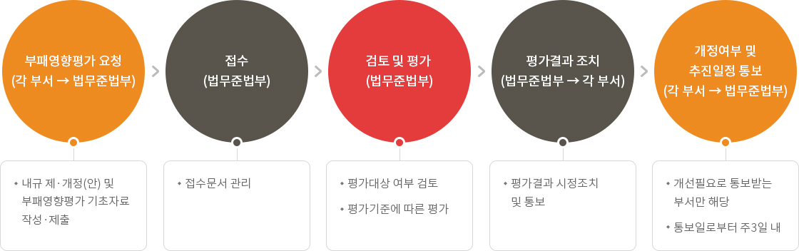
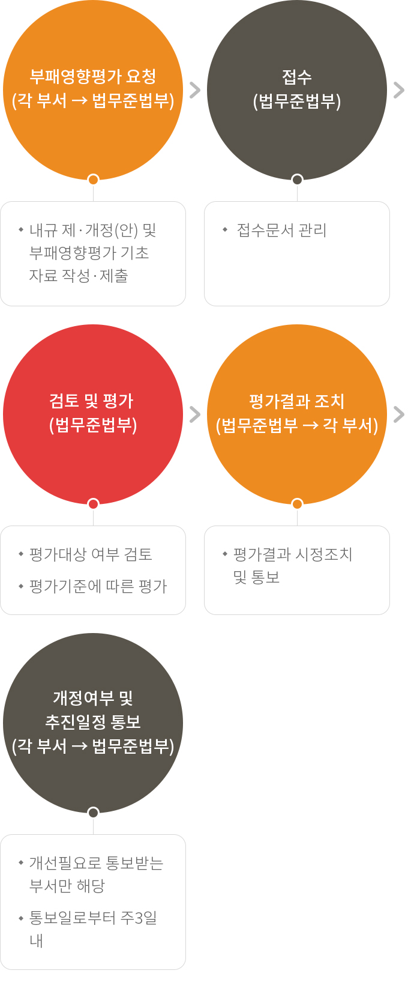

부패영향평가
부패영향평가
부패영향평가제도의 의의
내규에 내재하는 부패유발요인을 체계적으로 분석·평가하여 부패위험요소를 사전에 제거하는 제도
평가대상
제·개정을 필요로 하는 모든 내규(조직운영, 업무분장, 문서관리 등 부패유발 가능성이 없다고 인정되는 경우 등 제외)
평가절차
자율평가를 원칙으로 하며, 필요한 경우 국민권익위원회에 의한 평가 및 부패영향평가 컨설팅 병행
자율평가 업무 흐름도


-
- 부패영향평가 요청(각 부서 → 법무준법부)
- 내규 제·개정(안) 및 부패영향평가 기초자료 작성·제출
-
- 접수(법무준법부)
- 접수문서 관리
-
- 검토 및 평가 (법무준법부)
- 평가대상 여부 검토
- 평가기준에 따른 평가
-
- 평가결과 조치(법무준법부→각 부서)
- 평가결과 시정조치 및 통보
-
- 개정여부 및 추진일정 통보(각 부서→법무준법부)
- 개선필요로 통보받는 부서만 해당
- 통보일로부터 주3일 내
평가절차
법무준법부에서 내규 제·개정합의시 실시
부패영향평가
- 제 정 : 2010. 9.13
- 1차 개정 : 2012.12.24
제1조(목적)
이 요령은 내규에 내재하는 부패유발요인을 체계적으로 분석·평가함으로써 부패위험요소를 사전에 제거하기 위한 부패영향평가의 실시와 관련된 사항을 정함을 목적으로 한다.
제2조(평가대상)
부패영향평가는 제·개정을 필요로 하는 「내규규정」 제2조의 내규에 대하여 실시함을 원칙으로 한다. 다만, 다음 각 호의 어느 하나에 해당하는 경우에는 그러하지 아니하다.
- 법령, 정관, 정부방침 및 상위규정의 변경으로 개정을 요하는 경우
- 고객·국민생활 등과 직접 연관이 없는 조직설치·운영, 업무분장, 문서관리 등 부패유발 가능성이 없다고 인정되는 경우
- 그 밖에 서식의 제·개정이나 조문·자구 정리 등 그 개정 내용이 경미하다고 인정되는 경우
제3조(평가유형)
- 부패영향평가는 다음 각 호의 유형별로 구분하여 평가한다.
- 자율평가 : 별표양식 체크리스트에 따라 공사가 자율적으로 실시하는 평가
- 국민권익위원회에 의한 평가 : 내규의 제·개정시 필요하다고 인정하는 경우 공사가 국민권익위원회에 부패영향평가 요청을 함에 따라 실시하는 평가
- 컨설팅 평가 : 공사가 종합적 부패영향평가를 희망할 경우 국민권익위원회가 공사를 컨설팅 대상기관으로 선정하여 공사와 국민권익위원회의 협력체제하에 평가
- 부패영향평가는 자율평가를 원칙으로 한다.
제4조(평가주관부서 및 시기)
- 부패영향평가와 관련한 업무는 법무담당부서에서 실시한다.
- 부패영향평가는 내규의 제·개정 합의시 실시한다.
제5조(자율평가 절차 및 방법)
- 내규 제·개정부서는 [별표 1]의 부패영향평가 기초자료를 작성하여 평가주관부서에 제출한다.
- 평가주관부서는 [별표 2]에 따라 평가대상 여부를 확인하여 평가여부를 결정하며, [별표 3]에 의한 업무유형별 모형 중 어느 하나에 대하여 “예”로 체크된 경우에는 부패유발가능성이 있는 것으로 보아 평가를 실시한다.
- 평가대상에 대하여는 다음 각 호와 같이 처리한다.
- [별표 3]에 의한 평가대상의 경우에는 [별표 4] 및 [별표 5]의 평가기준에 따라 평가하여 [별표 6]의 종합평가표를 작성
- [별표 3]에 의하지 않은 평가대상의 경우에는 [별표 5]의 평가기준에 따라 평가하여 [별표 6]의 종합평가표를 작성
제6조(평가결과의 처리)
- 평가주관부서는 제5조에 의한 평가결과에 따라 [별표 7]의 부패영향평가 결과 통보서 및 [별표 8]의 부패영향평가 세부평가서를 작성하여 관련부서에 통보한다. 다만, 개선의견이 반영되어 수정ㆍ보완이 완료되었거나, 개선의견이 없는 경우 평가제안부서 등 관련부서 앞 통보를 생략할 수 있다.
- 평가주관부서에서 부패영향평가 결과 개선을 요구하여 통보한 사항에 대하여 평가제안부서 또는 제도운영부서는 해당 내규 제·개정 여부를 통보일로부터 3주일 내에 관련 내규 제·개정여부 및 추진일정 등을 기재하여 회신하여야 한다.
제7조(외부평가 요청)
- 제5조에 의한 자율평가 결과 다음 각 호에 해당하여 내부적인 개선, 정비가 곤란한 경우에는 국민권익위원회에 평가를 요청할 수 있다.
- 부패유발요인 제거를 위해서는 관계 법령 등의 개정이 필요한 경우
- 부패유발요인 개선에 있어서 유관기관 또는 관련부서와 이해관계대립으로 자체 개선이 곤란한 경우
- 전문적 사항으로 공사 자체 판단이 어려운 경우
- 그 밖에 위와 유사한 사유로 자체적인 개선·정비가 곤란한 경우
- 내규에 대하여 종합적인 부패영향평가가 필요한 경우 국민권익위원회에 부패영향평가 컨설팅을 요청할 수 있다.
제8조(기존 내규의 평가 등)
- 평가주관부서에서 필요하다고 인정되는 경우 기존 내규에 대해서도 부패영향평가를 실시할 수 있다.
- 내규소관부서가 아닌 부서가 부패영향평가를 요청할 경우 [별표 9]의 제안서를 작성하여 평가주관부서에 제출하는 방법으로 평가를 실시할 수 있다.
- 제1항·제2항의 경우 자율평가에 준하여 평가를 실시한다.
제9조(서식의 제정 등)
이 요령 시행에 필요한 관계서류의 내용 및 서식의 제정·개폐는 평가주관부서장에게 위임한다.
부칙(제정)
이 요령은 2010년 9월 13일부터 시행한다
부 칙(1)
이 요령은 2012년 12월 24일부터 시행한다.